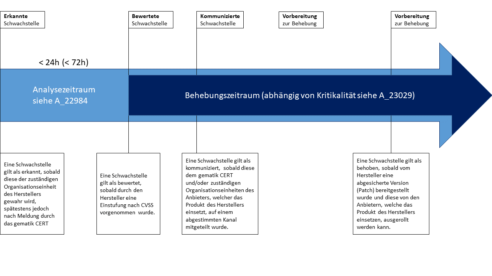

Elektronische Gesundheitskarte und Telematikinfrastruktur
Spezifikation Datenschutz- und Sicherheitsanforderungen der TI an Hersteller
| Version | 1.4.0 |
| Revision | 571804 |
| Stand | 06.02.2023 |
| Status | freigegeben |
| Klassifizierung | öffentlich |
| Referenzierung | gemSpec_DS_Hersteller |
Änderungen zur Vorversion
Anpassungen des vorliegenden Dokumentes im Vergleich zur Vorversion können Sie der nachfolgenden Tabelle entnehmen.
Dokumentenhistorie
| Version | Stand | Kap./ Seite | Grund der Änderung, besondere Hinweise | Bearbeitung |
|---|---|---|---|---|
| 1.0.0 |
14.05.18 |
freigegeben |
gematik |
|
| 1.1.0 | 15.05.19 | Änderungsliste P18.1 |
gematik | |
| 1.2.0 |
30.06.20 |
Anpassungen gemäß Änderungsliste P22.1 und Scope-Themen aus Systemdesign R4.0.0 |
gematik |
|
| 1.3.0 | 12.11.20 | Einarbeitung Scope-Themen zu R4.0.1 | gematik | |
| 1.4.0 | 06.02.23 | Einarbeitung IDP_Maintenance_22.2 | gematik |
Das vorliegende Dokument definiert übergreifende Sicherheits- und Datenschutzanforderungen für Hersteller von Produkten der Telematikinfrastruktur (TI), für die eine Produktzulassung vorgesehen ist.
Das vorliegende Dokument richtet sich an Hersteller von Produkten der Telematikinfrastruktur, für die eine Produktzulassung vorgesehen ist.
Dieses Dokument enthält normative Festlegungen zur Telematikinfrastruktur des deutschen Gesundheitswesens. Der Gültigkeitszeitraum der vorliegenden Version und deren Anwendung in Zulassungs- oder Abnahmeverfahren wird durch die gematik GmbH in gesonderten Dokumenten (z. B. Dokumentenlandkarte, Produkttypsteckbrief, Leistungsbeschreibung) festgelegt und bekannt gegeben.
Wichtiger Schutzrechts-/Patentrechtshinweis
Die nachfolgende Spezifikation ist von der gematik allein unter technischen Gesichtspunkten erstellt worden. Im Einzelfall kann nicht ausgeschlossen werden, dass die Implementierung der Spezifikation in technische Schutzrechte Dritter eingreift. Es ist allein Sache des Anbieters oder Herstellers, durch geeignete Maßnahmen dafür Sorge zu tragen, dass von ihm aufgrund der Spezifikation angebotene Produkte und/oder Leistungen nicht gegen Schutzrechte Dritter verstoßen und sich ggf. die erforderlichen Erlaubnisse/Lizenzen von den betroffenen Schutzrechtsinhabern einzuholen. Die gematik GmbH übernimmt insofern keinerlei Gewährleistungen.
Die Anforderungen dieses Dokumentes richten sich nicht an Anbieter betrieblicher Leistungen von Produkten der TI oder weiterer Anwendungen.
Spezifische Datenschutz- und Sicherheitsanforderungen für einzelne Produkttypen sind in den jeweiligen Spezifikationen des Produkttyps festgelegt.
Übergreifende Anforderungen an die Verwendung kryptographischer Algorithmen in der Telematikinfrastruktur sind in [gemSpec_Krypt] festgelegt.
Anforderungen als Ausdruck normativer Festlegungen werden durch eine eindeutige ID sowie die dem RFC 2119 [RFC2119] entsprechenden, in Großbuchstaben geschriebenen deutschen Schlüsselworte MUSS, DARF NICHT, SOLL, SOLL NICHT, KANN gekennzeichnet.
Sie werden im Dokument wie folgt dargestellt:
<AFO-ID> - <Titel der Afo>
Text / Beschreibung
[<=]
Dabei umfasst die Anforderung sämtliche zwischen Afo-ID und Textmarke angeführten Inhalte.
Dieses Dokument enthält Sicherheitsanforderungen an Produkttypen der TI. Bei Smartcards (z.B. eGK) sind die Anforderungen nur dem COS zugeordnet, nicht dem Objektsystem.
GS-A_2330-02
Hersteller von dezentralen Produkten der TI MÜSSEN präventive Maßnahmen zur Erkennung und Analyse von technischen Hard- oder Softwareschwachstellen („vulnerabilities“) ihres Produktes wie auch zur Bewertung und Implementierung von Sicherheitsupdates durchführen. Hierzu gehört insbesondere auch, dass sich der Hersteller aktiv und kontinuierlich über Schwachstellen in eingesetzten Hard- und Softwarekomponenten von Dritten informiert. Dies ist auch für Anteile des Produktes sicherzustellen, die von Drittherstellern stammen. <=
Hinweis: Von der gematik werden in Ausnahmefällen auch vom CVSS-Standard abweichende Bewertungssysteme zur Schwachstellenbewertung akzeptiert, sofern vom Hersteller Transparenz über die Bewertungskriterien hergestellt werden kann.
GS-A_2525-01
Hersteller von dezentralen Produkten der TI MÜSSEN die gematik direkt und unverzüglich über neu gemeldete Software- oder Hardware-Schwachstellen in ihren Produkten informieren und das weitere Vorgehen mit der gematik abstimmen, um die Auswirkungen unverzüglich auf das mögliche Minimum zu reduzieren und die Schwachstelle schnellstmöglich komplett zu schließen.
<=GS-A_2354-01
Hersteller von dezentralen Produkten der TI MÜSSEN eine vom koordinierenden ISM freigegebene Technologie zur Wahrung der Integrität, Authentizität und (wo nötig) Vertraulichkeit der Informationen zur Produktunterstützung und Schwachstellenmeldung einsetzen.
<=GS-A_2350-01
Hersteller von dezentralen Produkten der TI MÜSSEN der gematik Supportinformationen sowie Informationen zu Softwareupdates als Produktunterstützung für von ihnen entwickelte Produkte der TI zur Konsolidierung und Weiterleitung an die ISM der Beteiligten zur Verfügung stellen.
<=GS-A_4944-01
Hersteller von dezentralen Produkten der TI MÜSSEN für die von ihnen angebotenen Produkte der TI gewährleisten, dass technisch-organisatorische Verfahren zur Behebung von Sicherheitsmängeln in den Produkten während der Zeit des Einsatzes in der TI vorgehalten werden. Dies beinhaltet das kontinuierliche Aufspüren (bug tracking) und Nachbessern (bug fixing) von Sicherheitsmängeln (security bugs) und das zur Verfügung stellen von Updates (security updates). <=
Hinweis: In Anforderung GS-A_4944-01 bezeichnet die „Zeit des Einsatzes in der TI“ die Zeitspanne, für die das Produkt für die TI zugelassen ist.
Der Gesamtprozess der Bereitstellung von Updates ist nachfolgend skizziert:

Abbildung 1 Übersicht Schwachstellenmanagementprozess
GS-A_4945-01
Hersteller von dezentralen Produkten der TI MÜSSEN für die von ihnen angebotenen Produkte der TI gewährleisten, dass bei der Entwicklung der Produkte technisch-organisatorische Verfahren der Qualitätssicherung angewendet werden (bspw. fuzz (robustness) testing bzw. penetration testing und source code review). <=
GS-A_4946-01
Hersteller von dezentralen Produkten der TI MÜSSEN für die von ihnen angebotenen Produkte der TI gewährleisten, dass bei der Entwicklung der Produkte Secure Coding Guidelines angewendet werden; d. h., in einschlägigen Fachkreisen anerkannte, erprobte und bewährte Regeln sicherer Programmierung befolgt wurden. <=
GS-A_4947-01
Hersteller von dezentralen Produkten der TI MÜSSEN für die von ihnen angebotenen Produkte der TI gewährleisten, dass sie in einer Entwicklungsumgebung entwickelt werden, für die technische und organisatorische Maßnahmen zum Schutz der Vertraulichkeit und Integrität der Produkte getroffen werden. <=
A_17178
Hersteller von dezentralen Produkten der TI MÜSSEN für die von ihnen angebotenen Produkte der TI gewährleisten, dass das Produkt resistent bezüglich der im aktuellen und den beiden vorherigen OWASP Top 10 Report(s) ausgewiesenen Risiken ist. <=
Hinweis: Die Nichtanwendbarkeit eines Risikos für das Produkt ist zu begründen. Für Informationen zum Umgang mit den OWASP Top 10 Risiken wird auf den aktuellen [OWASP Top 10 Report] und die darin enthaltenen Vorgehensweisen für z. B. Entwickler und Tester verwiesen.
A_17179
Hersteller von dezentralen Produkten der TI, die zu ihrem Produkt ein Installationspaket mit zusätzlichen Softwarekomponenten ausliefern, MÜSSEN im Falle von Sicherheitsaktualisierungen dieser zusätzlichen Softwarekomponenten unverzüglich die gepatchten Softwareversionen als Aktualisierung an die Nutzer des Produktes ausliefern. <=
Hinweis: Hierunter fallen Softwarekomponenten von Dritten, die nicht von der gematik zugelassen werden und somit auch nicht Teil des Sicherheitsnachweises im Rahmen der Zulassung sind, bspw. Bibliotheken zur Laufzeitumgebung (Java-Bibliotheken etc.). Im Kontext dieser Anforderung beinhaltet „unverzüglich“ auch, dass der Hersteller sein Produkt im Zusammenhang mit den neuen Versionen der zusätzlichen Softwarekomponenten testet, bevor er diese an die Nutzer ausliefert. Ansonsten gilt, dass er die zusätzlichen Softwarekomponenten ohne schuldhaftes Zögern so schnell als möglich ausliefert. Sollte der Hersteller feststellen, dass die Sicherheitseigenschaften seines Produkts von der Aktualisierungen der zusätzlichen Softwarekomponenten beeinträchtigt sind, so muss er das Produkt erneut bei der gematik zur Zulassung einreichen – unabhängig davon, ob er sein Produkt verändert hat oder nicht.
A_19148
Der Hersteller eines Produktes MUSS die Sicherheits- und Datenschutzmaßnahmen für sein Produkt in einem Sicherheits- und Datenschutzkonzept dokumentieren und auf Verlangen der gematik zur Verfügung stellen. <=
Hinweis: Das Sicherheitskonzept muss die folgenden Punkte umfassen:
Hinweis: Das Datenschutzkonzept muss die folgenden Punkte umfassen:
A_19147
Der Hersteller eines Produktes MUSS einen Testplan für Sicherheitstests erstellen und auf Verlangen der gematik zur Verfügung stellen. <=
Hinweis: Der Testplan umfasst alle Sicherheitstests während der Phasen der Produktentwicklung sowie regelmäßige Sicherheitsprüfungen (Pentest) durch unabhängige Sicherheitsexperten. Der Umfang des Testplans hängt von der Zielplattform sowie den Funktionalitäten des Produktes ab und muss zwingend das Testvorgehen zu den Sicherheitsvorgaben der gematik beinhalten.
Orientierungen zu den Inhalten eines Testplanes sind z.B. im OWASP Mobile Security Testing Guide [MSTG] und im OWASP Mobile Application Security Verification Standard [MASVS] beschrieben. Der Testplan muss einen ähnlichen Detaillierungsgrad haben wie in den beiden OWASP-Referenzen.
A_19150
Der Hersteller eines Produktes MUSS seinen Testplan für Sicherheitstests umsetzen und der gematik bei jeder Veröffentlichung einer neuen Produktversion einen Testbericht zur Verfügung stellen. <=
A_19151
Der Hersteller eines Produktes MUSS während der Entwicklung des Produktes implementierungsspezifische Sicherheitsanforderungen dokumentieren und umsetzen. <=
Hinweis: Der Testbericht muss zwingend Testauswertungen zu den Sicherheitsvorgaben der gematik beinhalten.
A_19152
Der Hersteller eines Produktes MUSS innerhalb des Produktlebenszyklus (Entwicklung, Betrieb, Außerbetriebnahme) seines Produktes Sicherheitsaktivitäten integrieren und anwenden, d. h. in einschlägigen Fachkreisen anerkannte, erprobte und bewährte Regeln anwenden. <=
Hinweis: Ein Beispiel für Sicherheitsaktivitäten in einem Produktlebenszyklus ist der Microsoft Security Development Lifecycle. Für weitere Informationen siehe [OWASP SAMM Project] oder den durch das BSI bereitgestellten "Leitfaden zur Entwicklung sicherer Webanwendungen - Empfehlungen und Anforderungen an die Auftragnehmer" (insbesondere Kapitel 4).
A_19153
Der Hersteller eines Produktes MUSS einen sicherheitsrelevanten Softwarearchitektur-Review durchführen und identifizierte Architekturschwachstellen beheben. <=
A_19154
Der Hersteller eines Produktes MUSS eine Bedrohungsanalyse durchführen und Maßnahmen gegen die identifizierten Bedrohungen implementieren. <=
A_19155
Der Hersteller eines Produktes MUSS während der Entwicklung des Produktes sicherheitsrelevante Quellcode-Reviews oder automatisierte sicherheitsrelevante Quellcode-Scans durchführen. <=
A_19156
Der Hersteller eines Produkts MUSS während der Entwicklung des Produktes automatisierte Sicherheitstests durchführen. <=
A_19157
Der Hersteller eines Produktes MUSS einen Schulungsplan zur regelmäßigen Schulung von Entwicklern in sicherer Entwicklung und Secure-Coding-Techniken dokumentieren und umsetzen. <=
A_19158
Der Hersteller eines Produktes MUSS alle Entwickler des Produktes in sicherer Entwicklung und Secure-Coding-Techniken schulen. <=
A_19159
Der Hersteller eines Produktes MUSS den verwendeten sicheren Produktlebenszyklus und dessen Teilprozesse dokumentieren und auf Nachfrage der gematik zur Verfügung stellen. Die Dokumentation soll mindestens die folgenden Sicherheitsaktivitäten beschreiben:
A_19160
Der Hersteller eines Produktes MUSS während der Entwicklung des Produktes einen Änderungs- und Konfigurationsmanagementprozess verwenden. Das Änderungsmanagement umfasst mindestens den Entscheidungsprozess über vorgeschlagene Änderungen und die Autorisierung der Änderungen. Das Konfigurationsmanagement liefert mindestens zu jedem Zeitpunkt die eindeutige Zusammensetzung des Produktes bezüglich seiner eindeutigen Komponenten (Dritt-Software wie Bibliotheken, Frameworks) und den vorgenommenen Änderungen an eigenen Komponenten. <=
A_19161
Der Hersteller eines Produktes MUSS bei Veröffentlichung einer neuen Produktversion des Produktes die Einhaltung der Herstellererklärung "sicherheitstechnische Eignung" durch seinen Datenschutzbeauftragten verifizieren lassen. <=
Hinweis: Falls es keinen Datenschutzbeauftragten beim Hersteller gibt, kann eine alternative Rolle die sicherheitstechnische Eignung verifizieren, z.B. der Sicherheitsbeauftragte. Diese Rolle darf nicht an der Entwicklung des Produktes teilnehmen und muss direkt an die Geschäftsführung des Herstellers berichten.
A_19162
Der Hersteller eines Produktes MUSS die gematik bei Veröffentlichung einer neuen Produktversion informieren. <=
A_19163
Der Hersteller eines Produktes MUSS zusichern, dass die gematik oder ein von ihr zur Geheimhaltung verpflichteter Bevollmächtigter berechtigt sind,
A_19164
Der Hersteller eines Produktes MUSS Sicherheitsprüfungen (z.B. Pentest) der gematik unterstützen. <=
Hinweis: Unterstützen bedeutet beispielsweise das Bereitstellen einer Release- oder Beta-Version des Produkts, das Bereitstellen eines Testsystems inkl. Test-Accounts, kleine Anpassungen des Produktes, die eine Beschleunigung des Tests ermöglichen (z.B. Entfernung von Certificate Pinning, Code Obfuscation) und Unterstützung bei Rückfragen.
A_19165
Der Hersteller eines Produktes MUSS zusichern, dass die gematik oder ein von ihr zur Geheimhaltung verpflichteter Bevollmächtigter berechtigt sind,
| Kürzel |
Erläuterung |
|---|---|
| ISM |
Informationssicherheitsmanagement |
| SGB V |
Sozialgesetzbuch |
| TI |
Telematikinfrastruktur |
Die nachfolgende Tabelle enthält die Bezeichnung der in dem vorliegenden Dokument referenzierten Dokumente der gematik zur Telematikinfrastruktur. Der mit der vorliegenden Version korrelierende Entwicklungsstand dieser Konzepte und Spezifikationen wird pro Release in einer Dokumentenlandkarte definiert, Version und Stand der referenzierten Dokumente sind daher in der nachfolgenden Tabelle nicht aufgeführt. Deren zu diesem Dokument passende jeweils gültige Versionsnummer sind in der aktuellsten, von der gematik veröffentlichten Dokumentenlandkarte enthalten, in der die vorliegende Version aufgeführt wird.
| [Quelle] |
Herausgeber: Titel |
|---|---|
| [gemGlossar] |
gematik: Glossar der Telematikinfrastruktur |
| [gemRL_Betr_TI] |
gematik: Übergreifende Richtlinien zum Betrieb der TI |
| [gemSpec_Krypt] |
gematik: Verwendung kryptographischer Algorithmen in der Telematikinfrastruktur |
| [Quelle] |
Herausgeber (Erscheinungsdatum): Titel |
|---|---|
| [OWASP Top 10 Report] |
OWASP Foundation, OWASP Top Ten Project: “OWASP Top 10 The Ten Most Critical Web Application Security Risks“, https://www.owasp.org/index.php/Category:OWASP_Top_Ten_Project (üblicherweise im PDF Format) |